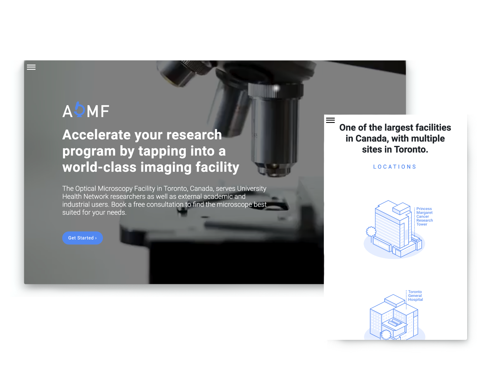

uhn website redesign
Role
Developer, Visual Design, User-Experience Design
University Health Network - Princess Margaret Cancer Research
Collaborated with a design and development team to bring wireframes and sketched
concepts to life. Work includes, but is not limited to, page redesigns, unified style guide
pertaining to iconography and typography, and other branding materials.
The redesign for various
research facilities were crafted to effectively communicate its intended goal, and to develop a brand that speaks to the users.
The Challenge
The facilities at UHN research aimed to grow their overall brand to help customers find what they are looking for. Some questions I had to ask myself were: how can we build professional, visually attractive, and responsive website from scratch to help achieve the facilities mission? How can we shape the end to end digital experience for these facilities and provide consistency across various sites?
The Goal
1. Define, create, and develop guidelines for various web pages.
2. Create a set of design and development components that help teams create consistent user interfaces.
3. Adopt a “mobile-first” approach to improve overall usability and visual design for redesign.
My Role
As a Web Developer & UX Designer, I was responsible for creating a user interface that is reusable across multiple sites. This involved structuring code from scratch. I collaborated with another intern to create wireframes, develop a design strategy and brand guideline, and use multiple programming languages to build the sites.
The Approach
Insights and Behaviours
Paired with a great intern and mentor, I mapped the user experience of the current sites to see where the pain points and gains were on the user journey.
Design and Development
To redesign 6 websites from scratch, my teammate and I did research into what type of brand we would create for the research facilities. I used sketching as a method to generate ideas of the UI, interactive elements, configuration of where content would be placed, and the type of code blocks that had to be created.
Ideation and
Wireframing
When thinking about the UI of the interface, I had to keep in mind the vision of the research facilities, and what the UI of the current sites were like.
1. The current sites did not reflect the mission of each individual research facility, making it harder to distinguish what is being offered.
2. The overall visual design for the sites were dull and dry, the layout lacked proximity and white space, and the content was hard to understand - if you aren’t in the bioinformatics/genomics field.
My idea for the redesign was to include lots of white space and keep the information architecture clear and concise. Extensive feedback of the sketches with the head team were required before designs could be deployed.
Mockup designs made using Figma.
Branding
Careful consideration went into the branding of the redesign for UHN’s research facilities. One of my goals included creating a brand guideline and strategy that appeals to the target audience. My team and I had to consider factors like colour schemes and typography. We wanted each research facility to have their own uniqueness yet maintain cohesiveness under the University Health Network. As a result, I chose colours that are bright and inviting, but professional.
Responsive Design
Let users have access to the sites through mobile browsers on their phones and other devices.
Having a website that behaves appropriately for every device is crucial when users expect an intuitive and seamless experience. Responsive design is serving webpages to users that adapt to any screen, whether it be a mobile, tablet or desktop. At UHN, using a Mobile First strategy has allowed us to:
1. Create a UI that looks great on multiple screen sizes e.g. mobile, tablet, desktop
2. Use responsive web design: grids and columns, resizable images and media queries
3. Consider functional improvements as screen size changes
Development
My team and I created code snippets that can be easily transferred across multiple sites if components such as buttons, lists, cards, navigation had to be used often.
As a developer, I collaborated with my team to build a responsive and intuitive framework using HTML/CSS, and Javascript. We maintained our code through version control and deployment using Git.
*git push origin master* - my best friend.
Looking Back
1. Little details matter
How can we present this information in a clearer format? Can this image be misinterpreted? What information is missing here that a user might want to know? Stepping back and putting your self in a users shoe is key to developing good solution.
2. Create an action plan
With just four months to design and develop 6 sites for a target market I did not understand, it was important to create a timeline of goals and expectations.
Without a plan going forward, improvements don’t get addressed, and tasks may become repetitive or unproductive. Everyday I updated my shared list of “things to do” with my team. In a collaborative manner, we would check off tasks completed at the end of the day.
Setting a timeline with goals, is a good way to prioritize what is important in a timely manner.
3. Keep experimenting and evolving
It is important to make continuous improvements to a product or a design to make it better! Constant feedback and meetings, listening to what our head research facilitators are telling us, all of this should be taken with careful consideration so we can plan our next iteration.
It is important to look at what other companies and competitors or best web design trends are adopting. This process helps us to stay updated with recent design methodologies, and our constant need to curate.